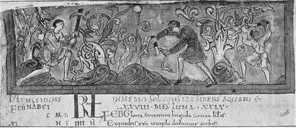

Monastic Gardening. Part 7
Description
This section is from the book "A History Of Gardening In England", by Alicia Amherst. Also available from Amazon: A History Of Gardening In England.
Monastic Gardening. Part 7
Some of the orchards must have been of considerable size. In the time of King John the grant of land to Lanthony Priory included twelve acres of orchard. An oft-quoted example to prove the early existence of orchards is a Bull of Pope Alexander III., dated 1175, confiscating the property of the monks of Winchenley, in Gloucestershire, with the " town of Swiring and all its orchards".
The cherry was, from the date of its introduction by the Romans, a popular fruit in this country. The " ciris beam," or cherry-tree, continued to be grown in early Saxon times. In the twelfth century it was one of the fruit trees praised by Necham, Abbot of Cirencester, in his poem, " De laudibus divinæ Sapiential," and this fruit was not forgotten in any monastic garden.
* Gardener's Accounts, Abingdon, 1388, " Et de xiiis. iiiid. di cicera vendita per estimacione et de xxxii s. vi d. ob de fructibus venditis, viz. : pomis wardon et nucibus".
† Dugdale, Monast., Vol. V., p. 371, says they were also called Abbot's pears, but assigns no authority.
At Norwich, besides the " Pomerium," the appleyard or orchard, there was a "cherry3erd," or, as it is called in another place, " orto cērsōr," or cherry-garden, and in spite of this we find cherries had to be bought " for the convent " from time to time, so great was the demand for this fruit. Perhaps it was the too frequent use of it that suggested to Necham the advisability of warning his readers that " cherries, mulberries, and grapes should be eaten fasting, and not after a meal." *
The third department, of the " Garden Warder," must now be considered. It has been already pointed out that vines were grown by the Romans in Britain, and, with the exception of the gap immediately following Roman rule, their history is continuous. Tradition points to a place called Vine, in Hampshire, as having taken its name from the vines planted there during the time of the Emperor Probus. Vines, the " Wine-streow," are noticed as boundaries or landmarks at several places in Saxon charters of the tenth century, and these might have been survivals of Roman vineyards.†
Bede, writing early in the eighth century, says that Britain " excels for grain and trees ... it also produces vines in some places." ‡ In the laws of Alfred,§ which were chiefly compilations of existing ones, it was notified that anyone who " damaged the vineyard or field of another, should give compensation." In the tenth century King Edwy confirmed the grant of a vineyard at Pathenesburgh, in Somerset, to the Abbey of Glastonbury. The grapes were gathered in October, and that month was called " Winter filling moneth," or " Wyn moneth," another proof of the extent to which vines were cultivated. The pruning of the vine took place in February. The picture of vine pruners taken from an Anglo-Saxon MS. in the British Museum, illustrates that month in the calendar.
* Necham, De Naturis Rerum.
† Kemble's Codex Diplomaticus, Vol. V.
MCXLVI. Eadmund, 943. Lechamstide.
MCLXXVII. Ealdred, 949. Boxoram.
MCXCVIII. Eadwig, 956. Welligforda, etc. ‡ Bede, Hist. Eccle. gentis Anglorum. Ed. 1848, p. 108. § LL. Saxon Wilki: p. 31. LL. Aelf: 26.
Necham devotes a chapter of his De Naturis Rerum, to the vine, but he chiefly moralizes, and does not treat his subject in its practical sense. He tells us that in gathering grapes, having reached the final row, the workers in the vineyard break into a song of rejoicing, but, unfortunately, he does not satisfy our curiosity by handing down the words of their chant.
In Domesday Book, the " vinitor," or vine-dresser, is only once mentioned, but some idea of the size of the vineyards may be gathered from the survey, as about thirty-eight in many different counties are described.* They are usually measured by " arpendi," the arpends being equal to about an acre, or less. The largest was at Bitesham, in Berkshire, on the land of Henry de Ferrieres, and covered twelve arpends. Some vineyards were old, others but newly-planted, as at Westminster four arpends are described as " vinea novella," and at Ware another vineyard as "nuprime plantatae." Some of the vineyards bore grapes, while others did not, and these are distinguished as " vinæ portantes," or " vinæ nonportantes." The quantity of wine yielded by a vineyard of six arpends in Essex was as much as twenty " modii," or about forty gallons, if the season was favourable.
If England could boast of so many vineyards before the Norman Conquest, it was only natural that the influx of foreigners from a grape-growing country should infuse fresh ardour into vine-culture, and monasteries, with Abbots or Priors from the Continent, lost no time in improving the old and making-new vineyards on their lands. The name " vineyard " was often retained long after the monks who planted it had passed away.
* In Kent, Hampshire, Wiltshire, Dorset, Gloucester, Berkshire, Hertford, Essex, Norfolk, Suffolk, etc.
A General Introduction to Domesday Book, by Sir Henry Ellis, 1833.
Thus " Vineyard," near Gloucester, described in Camden's Britannia as the seat of the Bridgemans, " on a hillet" to the west of the town, was once the vineyard belonging to the Abbots of Gloucester.* Gloucestershire was famous for its vines, which, wrote William of Malmesbury in the twelfth century, are " more plentiful in crops, and more pleasant in flavour than any in England;" for the wines do not "offend the mouth with sharpness, since they do not yield to the French in sweetness." † Again, we find in towns a " Vine Street," as in London, Grantham, Peterborough, and many others. Perhaps, at the latter place, the name marks the site of the vineyards planted by Abbot Marten, early in the twelfth century.
‡ At Hereford, sloping to the South-west, is the spot known as the " Vinefields," where the terraces, laid out for the vines, can still be distinguished. The accounts of the Diocese of Hereford, when the See was vacant by the death of Louis de Chorlton, in 1369, and the lands were in the hands of the King (Edward III.) until the next appointment, show the existence of a vineyard within the Manor of Ledesbury; while in a similar account for the year 1536-7,§ although the costs of the garden are entered, there is no mention of a vineyard ; and at another Manor on the same roll (Prestbury), the " herbage of the pasture called Vyneyarde " was sold, thus proving the former existence of vines on the spot, and showing how gradually they died out. But with our climate, what strikes one as more wonderful than their passing away, is that they were, at one time, so numerous throughout England. Even as far north as Cheshire, in the twelfth century, although there does not appear to have been any actual vineyard, the vine was not unknown, for Reginald of Durham notices, at Lextune in that county, a little church built of timber with vines climbing over it.||
It is difficult to realize the appearance of Ely in the eleventh century in the days " when Cnut the King came sailing by," as it rose from out the dreary and undrained fen land, the sunny slopes around the cloisters, so thickly planted with vineyards, tended by those monks who sang so merrily, that the Normans gave it the name of the " Isle des Vignes".
* Gough's Camden. Vol. I., p. 392. Ed. 1806. † De Gesta, Pontif. Book IV.
‡ Ministers' Accounts, B. 1138, No. 4. Bishops' Temporalities, Hereford Diocese.—Record Office.
§ Exchequer Q. R., Hereford Diocese, No. 133 (R.O.).
|| Reginaldi, Man: Dunelm: Lib.: de Admirandis Beati Cuthberti Surtees Soc, 1835.
Continue to: